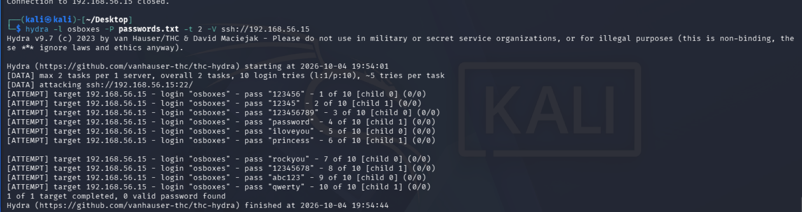
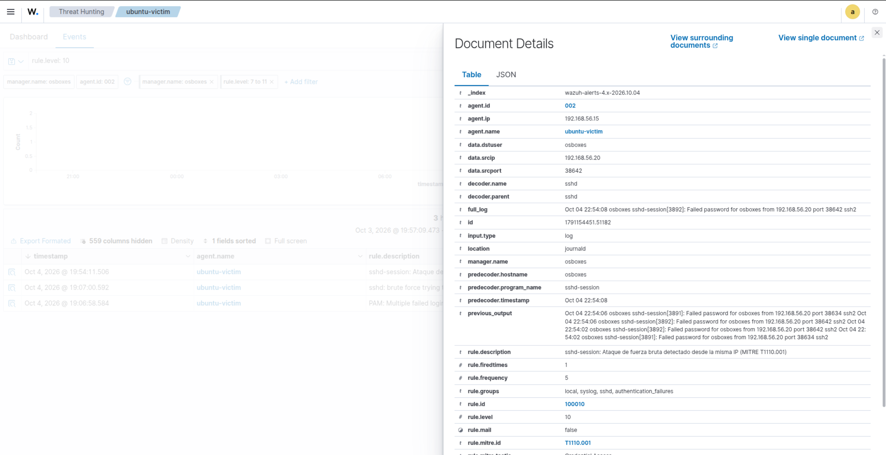
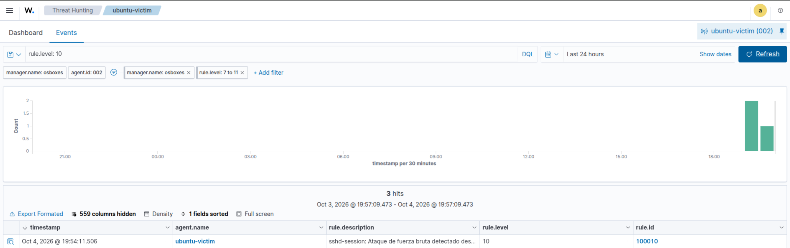
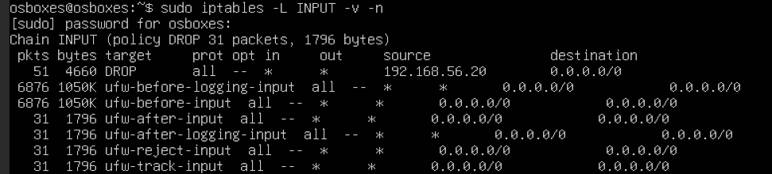

Enterprise SOC & Purple Team Simulation Lab
Resumen del Proyecto
Laboratorio integral de ciberseguridad enfocado en la emulación de adversarios (Red Team), ingeniería de detección (Detection-as-Code) y análisis en SIEM/EDR (Blue Team) mapeado a la matriz MITRE ATT&CK.
El objetivo del proyecto es reproducir técnicas reales de intrusión en un entorno controlado, analizar la telemetría generada en endpoints Windows y Linux, y construir reglas de detección precisas (Sigma / Wazuh) junto con playbooks de respuesta a incidentes bajo estándar NIST SP 800-61 / SANS.
Topología de Red Dual-NIC
El laboratorio se encuentra desplegado en un hipervisor VirtualBox utilizando una arquitectura aislada de dos interfaces por máquina para separar la gestión externa del tráfico de ataque y telemetría:
- Adaptador 1 (NAT): Conectividad a internet para paquetes y actualizaciones.
- Adaptador 2 (Host-Only
vboxnet0): Subred privada192.168.56.0/24dedicada exclusivamente al tráfico de emulación, telemetría e ingesta de logs.
graph TD
subgraph Host["Host de Control (192.168.56.1)"]
Hypervisor[Hipervisor VirtualBox / Navegador de Gestión]
end
subgraph LabNet["Subred Aislada vboxnet0 (192.168.56.0/24)"]
Kali["Red Team: Kali Linux<br/>192.168.56.20<br/>Hydra, Nmap, Metasploit"]
Win11["Víctima Windows: Windows 11 Pro<br/>192.168.56.10<br/>Sysmon + ScriptBlock Logging"]
UbuntuVictim["Víctima Linux: Ubuntu Server<br/>192.168.56.15<br/>OpenSSH, Web App"]
Wazuh["SOC SIEM: Wazuh 4.x All-in-One<br/>192.168.56.30<br/>Indexer + Manager + Dashboard"]
end
Kali -->|Ataques Brute Force / Escaneo| UbuntuVictim
Kali -->|Reconocimiento| Win11
UbuntuVictim -->|Telemetría SSH / Journald| Wazuh
Win11 -->|Eventos Sysmon EID 1, 3, 7| Wazuh
Wazuh -->|Active Response / iptables Drop| UbuntuVictim| Nodo | Sistema Operativo | IP Lab (vboxnet0) |
Función |
|---|---|---|---|
| SOC SIEM | Ubuntu Server 24.04 | 192.168.56.30 |
Ingesta de logs, correlación y Active Response |
| Endpoint Windows | Windows 11 Pro | 192.168.56.10 |
Telemetría Sysmon y PowerShell ScriptBlock |
| Servidor Linux | Ubuntu Server 24.04 | 192.168.56.15 |
Servicios SSH y aplicaciones emuladas |
| Atacante | Kali Linux | 192.168.56.20 |
Emulación de adversarios controlada |
Caso de Estudio 1: Ataque de Fuerza Bruta SSH (MITRE T1110.001)
1. Fase Ofensiva (Red Team)
Desde la máquina Kali Linux (192.168.56.20), se realizó un reconocimiento con nmap y posterior ataque de fuerza bruta sobre el servicio OpenSSH del servidor Linux (192.168.56.15) utilizando Hydra:
2. Detección & Telemetría (Blue Team)
En Ubuntu 24.04, los intentos fallidos de autenticación SSH son gestionados por el binario sshd-session en lugar del demonio clásico sshd. Se identificaron los logs de evento:
* Failed password for osboxes from 192.168.56.20 port ... ssh2
Se implementó una regla Sigma nativa y una regla personalizada en Wazuh (local_rules.xml, Regla 100010):
<group name="syslog,sshd,sshd-session,">
<rule id="100010" level="10" frequency="6" timeframe="120">
<if_matched_sid>5716</if_matched_sid>
<same_source_ip />
<description>Posible ataque de fuerza bruta SSH (múltiples fallos de autenticación sshd-session desde $(srcip)).</description>
<mitre>
<id>T1110.001</id>
<id>T1110</id>
</mitre>
<group>authentication_failures,pci_dss_10.2.4,pci_dss_10.2.5,</group>
</rule>
</group>
3. Contención Automatizada (Active Response)
Al alcanzarse el umbral de 6 intentos fallidos en 120 segundos, Wazuh dispara automáticamente un comando Active Response (firewall-drop) en el agente víctima, insertando una regla dinámica en iptables:
La IP atacante queda inmediatamente aislada por el tiempo configurado, cortando la conexión TCP en curso y mitigando la intrusión en tiempo real.
Evidencias Técnicas & Dashboard
1. Ataque Hydra en Kali Linux

2. Disparo de Regla 100010 en Wazuh SIEM

3. Panel de Eventos Críticos (Nivel 10 - T1110.001)

4. Bloqueo Dinámico por Active Response (iptables Drop)

Repositorio del Proyecto
El código fuente de las reglas Sigma, configuración de Wazuh y los Playbooks de Respuesta a Incidentes (SOPs) se encuentran en GitHub: 👉 github.com/Jusnock/purple-team-soc-lab